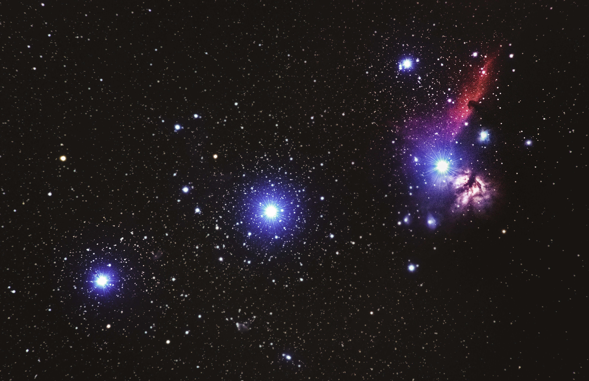

What Is Astronomy
"Astronomy forced the soul to look up,
leading us elsewhere from this world."
leading us elsewhere from this world."
천문학은 영혼으로 하여금 위를 쳐다보도록 강요하였고, 우리를 이 세계로부터 다른 곳으로 이끌었다.
-플라톤-

천문학은 인간이 하늘에 대하여 관심을 가지면서 가장 일찍 태동한 학문 중의 하나이다.
선사 시대의 여러 문명들은 피라미드, 스톤헨지 같은 천문학적 유물들을 남겼으며
바빌론, 그리스, 중국, 인도, 이란, 마야 문명 같은 동서양의 초기 문명들은
밤하늘에 관한 많은 관측기록을 남겼다.
그러나 망원경이 발명됨으로써 천문학은 현대 과학으로 발전을 하였다.
역사적으로 천문학은 측성학, 역법, 천체 항법, 점성술까지 수많은 분야들을 포함했는데
현대의 천문학은 물리학, 화학, 공학 등을 이용한다

선사 시대의 여러 문명들은 피라미드, 스톤헨지 같은 천문학적 유물들을 남겼으며
바빌론, 그리스, 중국, 인도, 이란, 마야 문명 같은 동서양의 초기 문명들은
밤하늘에 관한 많은 관측기록을 남겼다.
그러나 망원경이 발명됨으로써 천문학은 현대 과학으로 발전을 하였다.
역사적으로 천문학은 측성학, 역법, 천체 항법, 점성술까지 수많은 분야들을 포함했는데
현대의 천문학은 물리학, 화학, 공학 등을 이용한다
20세기에 들어와 천문학 분야는 관측 분야와 이론 분야로 크게 나뉘었다.
관측 천문학은 천체에 대한 자료를 얻어서 물리적으로 분석하는데 초점을 두며,
이론 천문학은 천체와 천문학적 현상들을 컴퓨터나 해석적인 방법으로 설명하는
모형을 세우는 것을 추구한다.
이 두 분야는 상호 보완적이며, 이론천문학은 관측결과를 설명하는 틀을 제공하고,
관측천문학은 이론결과를 확증해주는 역할을 한다.
관측 천문학은 천체에 대한 자료를 얻어서 물리적으로 분석하는데 초점을 두며,
이론 천문학은 천체와 천문학적 현상들을 컴퓨터나 해석적인 방법으로 설명하는
모형을 세우는 것을 추구한다.
이 두 분야는 상호 보완적이며, 이론천문학은 관측결과를 설명하는 틀을 제공하고,
관측천문학은 이론결과를 확증해주는 역할을 한다.